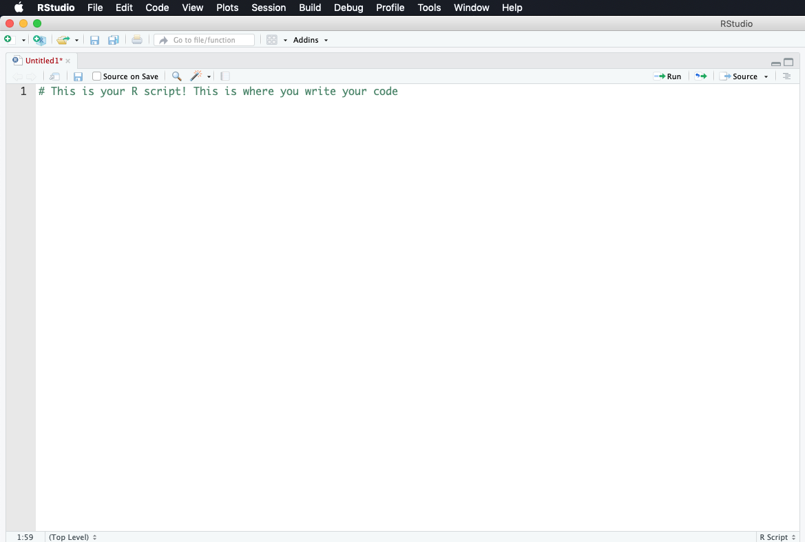

3 R & RStudio
By now you’ve downloaded R and RStudio and you’re probably wondering, why do I need to download both? R is that programming language that is running on your computer. RStudio is what we call an Indegrated Development Environment (IDE) - this is a technical term for a pretty application that’s all dressed up on the surface but underneath is really crunching some numbers (using R) at serious speeds. RStudio is the application we’ll be using. It is our Microsoft Excel. RStudio runs R in the background for us and gives us information and a nice, user-friendly layout. Let’s open RStudio and get familiar with it.
3.1 Open RStudio
Navigate to your applications folder on your computer. Launch RStudio. When you open it for the first time, you should see this.

This is RStudio. When you open it for the first time, we’ll need to open a new RScript to begin coding.
Open new R Script
To open a new R Script, we select the blankpage with green plus icon and select R Script from the menu.

This opens up the new R script and we can begin coding in R. Now that we have the R Script open, you’ll notice 4 quadrants. Let’s run through what those quadrants are.
3.2 R Studio Layout

Now let’s describe what’s going on here in a little more detail.
R Script - This is your canvas. This is where we write and edit our code. A lot of trial and error goes on here.

R Console - This is where you run your code. When we talk about running code, we mean we’re telling R to execute the code we’ve written in the R Script. R Console is the place inside RStudio where we are using the R programming language.

Variable Environment - This area keeps track of your variables, data tables, filenames, etc. Anything that you run in R that has a name will be stored here. Imagine the Variable Environment to be your closet - every time you make/buy a new sweater, the sweater goes in the closet. We can select data tables to view from this list here.

Files/Plots/Help - In this quadrant, we can toggle through files on our computer (we can view where your files are stored), view plots/visualizations that we’re creating in R (whenever you create a plot in R it is output here first), search for help and descriptions of R functions (there’s descriptions on every function you’ll use in R - they can all be loaded here in the help tab), and more.

3.3 Installing and Using Packages
To use a function in R that performs a task (such as plotting, statistical analysis, etc.), we must first load the package into our R session. When we use Microsoft Excel, nearly all the functions you can use with it are available in the toolbar at the top of the page. In R, however, you’ll need to load in the packages you’d like to use. Once the package is loaded, R will recognize any functions you call that are part of that package.
In R, the package is the toolbox; the function is the tool. We need to load the woodworking toolbox in order to use the hammer.
Most of the packages you’ll want to use are not previously installed on R. You’ll need to install them onto your local machine. Once they are installed once, you shouldn’t have to worry about installing them again. Here’s how you install the ggplot2 package.
Paste this code into your console. Then hit enter and watch R run your code to install the packages!
If R console returns with a question like, “Would you like to install from source? Yes / No” - answer with Yes. These packages we’re downloading contain pre-written code that other developers have created so we don’t have to recreate the wheel. Source is a location where the package is stored - it’s the initial location it was created, in fact. Think of the package download location as a Car Dealership - all car dealerships sell the same thing, but they all have different cars in different colors from different years. When we select source, we select a car directly from the manufacturer.
3.4 Loading the installed packages into R
Here’s the code we use to load a package:
You may be wondering, why do I need to load in the packages I want to use? R is designed to be fast. If you were to pre-load every single package available in R, you’d be loading thousands and thousands of packages. We can keep R light and fast by only loading the specific “toolboxes” we need.
Now that the ggplot2 package is installed, we can use any function that is within that package. If you’re curious about what functions are in a particular package, most packages have thorough documentation and examples online.
3.5 Running Code
In R, there are multiple ways to run code. Remember that we write code in an R Script and run that code in the console. We can execute code in the following ways:
- Click ‘Run’ at the top of the R script. Note that yours may not look the exact same, but just find a
Runbutton to click!

- This option allows you to run sections of your code, line by line, or the whole script.
While the cursor is on a line of code you want to run in the R script, Hit
Ctrl + Enteron Windows,Cmd + Enteron Mac. This will run that line of code.Select and highlight the section of code you want to run in the R script, Hit
Ctrl + Enteron Windows,Cmd + Enteron Mac.This will run that selected section of code.As you become more advanced, you’ll be able to write a script in RStudio and then run the entire script on your computer without opening it again. We won’t touch this in this workshop, but it’s straight-forward once you get the hang of it.
3.6 Checkpoint - Writing your first R code
Let’s write an R script that prints out names, run the code to make sure it works properly, and then save it.
# load the base package - remember the # key indicates a comment, R does not run these lines of code!
library(base)
# let's create a list with our names
names = list('Peter', 'Sarah', 'Tom', 'Helen')
# now let's use the print function to print out those names
print(names)## [[1]]
## [1] "Peter"
##
## [[2]]
## [1] "Sarah"
##
## [[3]]
## [1] "Tom"
##
## [[4]]
## [1] "Helen"You can copy and paste this code in your script quadrant and then Run the code as specified above. You can also paste it directly into your console and click enter but note that doing so this way will not save your code. We write scripts, save them, and then run them in the console.
Here’s what it looks like when we copy it to the Script quadrant.

Now here’s what it looks like after I run the code…

3.7 Explanation - Writing your first R code
Line by Line Explanation
In this example, we created a variable called names (the object or thing that we create in R that can be called on by it’s variable name - think of this a sa column in Excel). We used the list() function to populate a list of names (we know it’s a function because of the ()). Then we used the print() function to print out the names variable. Once the script has been written, we can navigate to File -> Save As…-> print_names.R . Remember, no spaces in the filename and it must be saved as .R.
What’s going on with R/RStudio here?
We wrote our script in the Script quadrant of Rstudio. When we were ready to run the script, we ran the code which sent the code down to the console quadrant. The console quadrant is where the R programming language is actually running. Our fancy RStudio application talks to R for us so we don’t have to. Note that our names variable can be found in the Variable Environment quadrant since we ran that object in R. It can now be called on anytime. Now we can see how RStudio is really the middle-man between us and R. Note the term using R may be used as short-hand for saying using RStudio - it’s no longer important to state the difference now that we know what’s really going on.
3.8 How does an R script generally flow?
Now it’s time to get your hands dirty. We can sit and chat about all these things R can do and how to do them, but you won’t retain that information until you use R yourself. This will be confusing at first if you’re new to this type of programming, but the longer you spend with it, the more sense it will make.
A typical R script will generally look like this:
# James Simkins
# Load libraries
library(ncdf4)
library(fields)
ncFile <- ncdf4::nc_open("~/Documents/Github/geog473-673/datasets/OR_ABI-L2-SSTF-M3_G16_s20192081300453_e20192081400161_c20192081406297.nc")
sstK <- ncdf4::ncvar_get(nc=ncFile, varid="SST")
lat <- ncdf4::ncvar_get(nc=ncFile, varid="latitude")
lon <- ncdf4::ncvar_get(nc=ncFile, varid="longitude")
# convert sst from Kelvin to Celsius
sstC <- sstK - 273.15
# remove values below 0C
sstC[sstC < 0] = NA
# Plot the matrix
fields::image.plot(x=lon, y=lat, z=sstC, legend.lab="Celsius")
title("GOES-R SST Product 7/25/2019 19:00 UTC")
3.9 Now Let’s Break Down This Script
In R, we need to call on packages/libraries that we want to load in. We do this via the “library()” function or the “require()” function - both do the same thing. Notice that we do this at the beginning of the script because R reads line by line and we need these loaded before we can use the functions within the packages.
# Load libraries
library(ncdf4)
library(fields)
#######################################
ncFile <- ncdf4::nc_open(filename="~/Documents/Github/geog473-673/datasets/OR_ABI-L2-SSTF-M3_G16_s20192081300453_e20192081400161_c20192081406297.nc")
sstK <- ncdf4::ncvar_get(nc=ncFile, varid="SST")
lat <- ncdf4::ncvar_get(nc=ncFile, varid="latitude")
lon <- ncdf4::ncvar_get(nc=ncFile, varid="longitude")Object = something. In this case, object name is ncFile and it holds an opened NetCDF file. We open this file via the “nc_open” function that’s within the “ncdf4” library. Note the “ncdf4::” syntax. This is NOT necessary for coding in R. Once you load in the library, R knows what you mean when you type in a function such as “nc_open”. I added it here so you know where these functions are coming from.
Notice that I use “<-” for objects and “=” for arguments within the function. This is key, as I can use either “<-” or “=” for objects (like ncFile or sstK) but I MUST use “=” within the function ‘walls’ (the parantheses).
For those of you not used to NetCDF files, they’re an efficient filetype heavily used in physical sciences. Within each file, metadata (time, latitude info, longitude info, projection, etc.), and variables (sea surface temperature, latitude points, longitude points, chlorophyll, etc.) are stored in these. We open the netcdf file and then extract what we want out of it using “ncvar_get”, which is short for “netcdf variable get”. Confused about how to use ncvar_get? Try:
# Load libraries
library(ncdf4)
library(fields)
ncFile <- ncdf4::nc_open(filename="~/Documents/Github/geog473-673/datasets/OR_ABI-L2-SSTF-M3_G16_s20192081300453_e20192081400161_c20192081406297.nc")
sstK <- ncdf4::ncvar_get(nc=ncFile, varid="SST")
#######################################This is a really attractive feature within R and exists for every function within an official R library. Now, back to the script…
# Load libraries
library(ncdf4)
library(fields)
ncFile <- ncdf4::nc_open(filename="~/Documents/Github/geog473-673/datasets/OR_ABI-L2-SSTF-M3_G16_s20192081300453_e20192081400161_c20192081406297.nc")
sstK <- ncdf4::ncvar_get(nc=ncFile, varid="SST")
#######################################
# convert sst from Kelvin to Celsius
sstC <- sstK - 273.15The SST variable from the netCDF file was in Kelvin and we want to convert it to Celsius. Right now, sstK is a matrix. How do I know this? Look at your environment, or simply type into your console:
# Load libraries
library(ncdf4)
library(fields)
ncFile <- ncdf4::nc_open(filename="~/Documents/Github/geog473-673/datasets/OR_ABI-L2-SSTF-M3_G16_s20192081300453_e20192081400161_c20192081406297.nc")
sstK <- ncdf4::ncvar_get(nc=ncFile, varid="SST")
#######################################
class(sstK)## [1] "matrix"Class is a useful function that is loaded with the base library everytime you fire up R. It tells us what type of object we have. Now that we know this is a matrix, we can subtract 0 Celsius, or 273.15 Kelvin. When we have a matrix in R and perform any math on it, it does that math on each and every matrix value.
#Quick and Dirty Quality Control
There are bad values that crept into the dataset and we need to convert all of them to NaN (aka Not A Number…also known as NA (Not Available) in R). How do we know there are bad values in this dataset?
# Load libraries
library(ncdf4)
library(fields)
ncFile <- ncdf4::nc_open(filename="~/Documents/Github/geog473-673/datasets/OR_ABI-L2-SSTF-M3_G16_s20192081300453_e20192081400161_c20192081406297.nc")
sstK <- ncdf4::ncvar_get(nc=ncFile, varid="SST")
#######################################
summary(as.vector(sstK))## Min. 1st Qu. Median Mean 3rd Qu. Max. NA's
## -999.0 286.9 300.0 278.2 302.0 310.0 2175822summary() is another great base function. In order to use it on a matrix, we need to convert it to a vector - summary can’t do 2 dimensional objects like matrices, it needs a one dimensional vector of numbers. The “as.vector” function just says hey R read in sstK as a vector for me would ya? Notice the ‘Min’ in the summary output. -999? No way is that a valid Kelvin value, especially since we subtract another 273.15 to this number to make the the Celsius matrix. So clearly we have some bad data that we need to convert to NA’s. We do this by…
library(ncdf4)
library(fields)
ncFile <- ncdf4::nc_open("~/Documents/Github/geog473-673/datasets/OR_ABI-L2-SSTF-M3_G16_s20192081300453_e20192081400161_c20192081406297.nc")
sstK <- ncdf4::ncvar_get(nc=ncFile, varid="SST")
lat <- ncdf4::ncvar_get(nc=ncFile, varid="latitude")
lon <- ncdf4::ncvar_get(nc=ncFile, varid="longitude")
# convert sst from Kelvin to Celsius
sstC <- sstK - 273.15
# remove values below 0C
#######################################
sstC[sstC < 0] = NAThis line reads as: sstC where sstC is less than 0 equals NA. The brackets here can be thought of as the ‘condition’, that is what you’re looking to change. This is called a vector operation, which we will get more into later but these are important becuase it’s far faster to do this than a for loop.
library(ncdf4)
library(fields)
ncFile <- ncdf4::nc_open("~/Documents/Github/geog473-673/datasets/OR_ABI-L2-SSTF-M3_G16_s20192081300453_e20192081400161_c20192081406297.nc")
sstK <- ncdf4::ncvar_get(nc=ncFile, varid="SST")
lat <- ncdf4::ncvar_get(nc=ncFile, varid="latitude")
lon <- ncdf4::ncvar_get(nc=ncFile, varid="longitude")
# convert sst from Kelvin to Celsius
sstC <- sstK - 273.15
# remove values below 0C
#######################################
sstC[sstC < 0] = NA
summary(as.vector(sstC))## Min. 1st Qu. Median Mean 3rd Qu. Max. NA's
## 0.0 19.8 27.6 24.1 29.0 36.8 2679819Now we see that our summary looks good (even though we’re looking at a matrix in celsius now). So all that’s left to do is plot this up…
# James Simkins
# Load libraries
library(ncdf4)
library(fields)
ncFile <- ncdf4::nc_open("~/Documents/Github/geog473-673/datasets/OR_ABI-L2-SSTF-M3_G16_s20192081300453_e20192081400161_c20192081406297.nc")
sstK <- ncdf4::ncvar_get(nc=ncFile, varid="SST")
lat <- ncdf4::ncvar_get(nc=ncFile, varid="latitude")
lon <- ncdf4::ncvar_get(nc=ncFile, varid="longitude")
# convert sst from Kelvin to Celsius
sstC <- sstK - 273.15
# remove values below 0C
sstC[sstC < 0] = NA
#######################################
# Plot the matrix
fields::image.plot(x=lon, y=lat, z=sstC, legend.lab="Celsius")
title("GOES-R SST Product 7/25/2019 19:00 UTC")
Now we plot this up using the ‘image.plot()’ function from the ‘fields’ library. We just tell it to plot the sstC but notice that I didn’t place an argument in here. If you don’t tell image.plot() what an argument actually is, it assumes you’re following the order that the function was written in. If you declare arguments, such as ‘z=sstC’ or like ‘varid=“SST”’ from above, you can place the arguments in whatever order you want in that function. Notice that for this kind of plot, the ‘title()’ function is a separate function rather than an argument of ‘image.plot()’. This goes for a lot of plot aesthetics that we’ll get into later. Remember, if you’re ever confused about something like this just tell R you need ‘help()’.
3.10 In Class Exercise
- Go to https://github.com/jsimkins2/geog473-673/tree/master/datasets
- Download ‘OR_ABI-L2-SSTF-M3_G16_s20192081300453_e20192081400161_c20192081406297.nc’
- Make simple plot of the ‘DQF’ (Data Quality Flag) variable
-Hint: You may have to use ‘install.packages’ in your console first
Aim for something like this:
3.11 DataTypes
If you look into your environment from the in class exercise, you’ll notice under the ‘Data’ tab you have a large matrix of the DQF values. R stores these matrices without the column/row identifier (aka lat & lon). We provide the image.plot() function with the lon & lat arrays becuase it doesn’t know what the x & y coordinates are of the matrix. Notice that the environment tells you the dimensions - the matrix is 2778 x 1989. R is indexed from 1 to the length of the dimension. Here is what I mean:
dim(sstC)is2778 1989dim(lat)is1989lat[0]isnumeric(0)lat[1]is16.00283lat[1989]is51.98563lat[1990]isNA
The above tests are referred to as indexing. The 1st point of the lat array is 16.00283. In R, we index using brackets []. If you want to find more values other than just a single point, the procedure is referred to as slicing.
lat[1:10]
is
16.00283 16.02093 16.03903 16.05713 16.07523 16.09333 16.11143 16.12953 16.14763 16.16573
The lat object we’ve been exploring here is an ‘array’.
An array is a vector with one or more dimensions. So, an array with one dimension is (almost) the same as a vector. An array with two dimensions is (almost) the same as a matrix. An array with three or more dimensions is an n-dimensional array.
A vector is what is called an array in all other programming languages except R — a collection of cells with a fixed size where all cells hold the same type (integers or characters or reals or whatever).
A list can hold items of different types and the list size can be increased on the fly. List contents can be accessed either by index (like mylist[[1]]) or by name (like mylist$age).
## [1] "delaware"A matrix is a two-dimensional vector (fixed size, all cell types the same).
A data frame is called a table in most languages. Each column holds the same type, and the columns can have header names.
## mpg cyl disp hp drat wt qsec vs am gear carb
## Mazda RX4 21.0 6 160.0 110 3.90 2.620 16.46 0 1 4 4
## Mazda RX4 Wag 21.0 6 160.0 110 3.90 2.875 17.02 0 1 4 4
## Datsun 710 22.8 4 108.0 93 3.85 2.320 18.61 1 1 4 1
## Hornet 4 Drive 21.4 6 258.0 110 3.08 3.215 19.44 1 0 3 1
## Hornet Sportabout 18.7 8 360.0 175 3.15 3.440 17.02 0 0 3 2
## Valiant 18.1 6 225.0 105 2.76 3.460 20.22 1 0 3 1
## Duster 360 14.3 8 360.0 245 3.21 3.570 15.84 0 0 3 4
## Merc 240D 24.4 4 146.7 62 3.69 3.190 20.00 1 0 4 2
## Merc 230 22.8 4 140.8 95 3.92 3.150 22.90 1 0 4 2
## Merc 280 19.2 6 167.6 123 3.92 3.440 18.30 1 0 4 4
## Merc 280C 17.8 6 167.6 123 3.92 3.440 18.90 1 0 4 4
## Merc 450SE 16.4 8 275.8 180 3.07 4.070 17.40 0 0 3 3
## Merc 450SL 17.3 8 275.8 180 3.07 3.730 17.60 0 0 3 3
## Merc 450SLC 15.2 8 275.8 180 3.07 3.780 18.00 0 0 3 3
## Cadillac Fleetwood 10.4 8 472.0 205 2.93 5.250 17.98 0 0 3 4
## Lincoln Continental 10.4 8 460.0 215 3.00 5.424 17.82 0 0 3 4
## Chrysler Imperial 14.7 8 440.0 230 3.23 5.345 17.42 0 0 3 4
## Fiat 128 32.4 4 78.7 66 4.08 2.200 19.47 1 1 4 1
## Honda Civic 30.4 4 75.7 52 4.93 1.615 18.52 1 1 4 2
## Toyota Corolla 33.9 4 71.1 65 4.22 1.835 19.90 1 1 4 1
## Toyota Corona 21.5 4 120.1 97 3.70 2.465 20.01 1 0 3 1
## Dodge Challenger 15.5 8 318.0 150 2.76 3.520 16.87 0 0 3 2
## AMC Javelin 15.2 8 304.0 150 3.15 3.435 17.30 0 0 3 2
## Camaro Z28 13.3 8 350.0 245 3.73 3.840 15.41 0 0 3 4
## Pontiac Firebird 19.2 8 400.0 175 3.08 3.845 17.05 0 0 3 2
## Fiat X1-9 27.3 4 79.0 66 4.08 1.935 18.90 1 1 4 1
## Porsche 914-2 26.0 4 120.3 91 4.43 2.140 16.70 0 1 5 2
## Lotus Europa 30.4 4 95.1 113 3.77 1.513 16.90 1 1 5 2
## Ford Pantera L 15.8 8 351.0 264 4.22 3.170 14.50 0 1 5 4
## Ferrari Dino 19.7 6 145.0 175 3.62 2.770 15.50 0 1 5 6
## Maserati Bora 15.0 8 301.0 335 3.54 3.570 14.60 0 1 5 8
## Volvo 142E 21.4 4 121.0 109 4.11 2.780 18.60 1 1 4 2Notice that it’s organized just like an excel spreadsheet. In essence, a dataframe in R is just an advanced Excel Spreadsheet.
## [1] "data.frame"Let’s explore a column of this data:
## [1] 21.0 21.0 22.8 21.4 18.7 18.1 14.3 24.4 22.8 19.2 17.8 16.4 17.3 15.2 10.4
## [16] 10.4 14.7 32.4 30.4 33.9 21.5 15.5 15.2 13.3 19.2 27.3 26.0 30.4 15.8 19.7
## [31] 15.0 21.4Now let’s sort the entire dataset by this column from least to greatest
## mpg cyl disp hp drat wt qsec vs am gear carb
## Cadillac Fleetwood 10.4 8 472.0 205 2.93 5.250 17.98 0 0 3 4
## Lincoln Continental 10.4 8 460.0 215 3.00 5.424 17.82 0 0 3 4
## Camaro Z28 13.3 8 350.0 245 3.73 3.840 15.41 0 0 3 4
## Duster 360 14.3 8 360.0 245 3.21 3.570 15.84 0 0 3 4
## Chrysler Imperial 14.7 8 440.0 230 3.23 5.345 17.42 0 0 3 4
## Maserati Bora 15.0 8 301.0 335 3.54 3.570 14.60 0 1 5 8
## Merc 450SLC 15.2 8 275.8 180 3.07 3.780 18.00 0 0 3 3
## AMC Javelin 15.2 8 304.0 150 3.15 3.435 17.30 0 0 3 2
## Dodge Challenger 15.5 8 318.0 150 2.76 3.520 16.87 0 0 3 2
## Ford Pantera L 15.8 8 351.0 264 4.22 3.170 14.50 0 1 5 4
## Merc 450SE 16.4 8 275.8 180 3.07 4.070 17.40 0 0 3 3
## Merc 450SL 17.3 8 275.8 180 3.07 3.730 17.60 0 0 3 3
## Merc 280C 17.8 6 167.6 123 3.92 3.440 18.90 1 0 4 4
## Valiant 18.1 6 225.0 105 2.76 3.460 20.22 1 0 3 1
## Hornet Sportabout 18.7 8 360.0 175 3.15 3.440 17.02 0 0 3 2
## Merc 280 19.2 6 167.6 123 3.92 3.440 18.30 1 0 4 4
## Pontiac Firebird 19.2 8 400.0 175 3.08 3.845 17.05 0 0 3 2
## Ferrari Dino 19.7 6 145.0 175 3.62 2.770 15.50 0 1 5 6
## Mazda RX4 21.0 6 160.0 110 3.90 2.620 16.46 0 1 4 4
## Mazda RX4 Wag 21.0 6 160.0 110 3.90 2.875 17.02 0 1 4 4
## Hornet 4 Drive 21.4 6 258.0 110 3.08 3.215 19.44 1 0 3 1
## Volvo 142E 21.4 4 121.0 109 4.11 2.780 18.60 1 1 4 2
## Toyota Corona 21.5 4 120.1 97 3.70 2.465 20.01 1 0 3 1
## Datsun 710 22.8 4 108.0 93 3.85 2.320 18.61 1 1 4 1
## Merc 230 22.8 4 140.8 95 3.92 3.150 22.90 1 0 4 2
## Merc 240D 24.4 4 146.7 62 3.69 3.190 20.00 1 0 4 2
## Porsche 914-2 26.0 4 120.3 91 4.43 2.140 16.70 0 1 5 2
## Fiat X1-9 27.3 4 79.0 66 4.08 1.935 18.90 1 1 4 1
## Honda Civic 30.4 4 75.7 52 4.93 1.615 18.52 1 1 4 2
## Lotus Europa 30.4 4 95.1 113 3.77 1.513 16.90 1 1 5 2
## Fiat 128 32.4 4 78.7 66 4.08 2.200 19.47 1 1 4 1
## Toyota Corolla 33.9 4 71.1 65 4.22 1.835 19.90 1 1 4 13.12 Essential Skills: The For Loop
For loops & conditional statements are a key skill in programming. They allow you to process through large datasets or multiple datasets thus minimizing the amount of manual work you need to do. The basic for loop looks like this…
# Generate sequence of numbers from 1 to 10 using the seq() function (seq for sequence)
numbersList = seq(from=1,to=10,by=1)
# Multiply each number in the numbersList by 8 and print the result
for (i in numbersList){
temNumber = i * 8
print(temNumber)
}## [1] 8
## [1] 16
## [1] 24
## [1] 32
## [1] 40
## [1] 48
## [1] 56
## [1] 64
## [1] 72
## [1] 80Notice the general structure of R for loops. ‘for’ signals to R you’re beginning a for loop, which requires the general structure to look like:
for (something in something inside these parentheses){ do something within these curly brackets }
Yes, you must have these parentheses and curly brackets present and surrounding the appropriate code. If you forget a parentheses or curly bracket you’ll have errors pop up…this happens to me all the time still.
While these must be present, R doesn’t care where they are in your code (****which is very unique amongst programming languages). For example, notice how this ugly code is different but still runs…
# Generate sequence of numbers from 1 to 10 using the seq() function (seq for sequence)
numbersList = seq(from=1,to=10,by=1)
# Multiply each number in the numbersList by 8 and print the result
for ( i in numbersList
){
temNumber = i * 8
print(temNumber)
}## [1] 8
## [1] 16
## [1] 24
## [1] 32
## [1] 40
## [1] 48
## [1] 56
## [1] 64
## [1] 72
## [1] 80The general structure is still: for(condition){do something}. If statements are set up the same way
# Generate sequence of numbers from 1 to 10 using the seq() function (seq for sequence)
numbersList = seq(from=1,to=10,by=1)
# Multiply each number in the numbersList by 8 and print the result
for (i in numbersList){
if (i==4){
temNumber = i * 8
print(temNumber)
}
}## [1] 32This is referred to as a ‘nested loop’, because there is a conditional statement within another one. Key takeaway here: in programming languages, ‘=’ is an assignment (i.e. x = 4), whereas ‘==’ is an equality test (i == 4). To put this loop in layman’s terms: for i in numbersList, if i is equal to 4, multiply i by 8 and then print temNumber.
We can also have nested for loops.
# Generate sequence of numbers from 1 to 3 this time using the seq() function (seq for sequence)
numbersList = seq(from=1,to=3,by=1)
lettersList = list("A", "B", "C")
for (num in numbersList){
for (let in lettersList){
print(c(num,let))
}
}## [1] "1" "A"
## [1] "1" "B"
## [1] "1" "C"
## [1] "2" "A"
## [1] "2" "B"
## [1] "2" "C"
## [1] "3" "A"
## [1] "3" "B"
## [1] "3" "C"You can name the object within the list whatever you want (i, j, num, let, etc.). Also, c() is the concatenate functin that combines values into a vector or list. The order doesn’t matter in this for loop…
# Generate sequence of numbers from 1 to 3 this time using the seq() function (seq for sequence)
numbersList = seq(from=1,to=3,by=1)
lettersList = list("A", "B", "C")
for (let in lettersList){
for (num in numbersList){
print(c(num,let))
}
}## [1] "1" "A"
## [1] "2" "A"
## [1] "3" "A"
## [1] "1" "B"
## [1] "2" "B"
## [1] "3" "B"
## [1] "1" "C"
## [1] "2" "C"
## [1] "3" "C"But it does in this one…
# Generate sequence of numbers from 1 to 10 using the seq() function (seq for sequence)
numbersList = seq(from=1,to=10,by=1)
# Multiply each number in the numbersList by 8 and print the result
if (i==4){
for (i in numbersList){
temNumber = i * 8
print(temNumber)
}
}Here’s one more example for multi conditional statement with an else…
# Generate sequence of numbers from 1 to 3 this time using the seq() function (seq for sequence)
numbersList = seq(from=1,to=3,by=1)
lettersList = list("A", "B", "C")
for (num in numbersList){
for (let in lettersList){
if (num == 3 && let == "B"){
print(c(num,let))
} else{
print("Not what we want")
}
}
}## [1] "Not what we want"
## [1] "Not what we want"
## [1] "Not what we want"
## [1] "Not what we want"
## [1] "Not what we want"
## [1] "Not what we want"
## [1] "Not what we want"
## [1] "3" "B"
## [1] "Not what we want"&& means “and” … || means “or”…these are useful in multi conditional statements. The ‘else’ statement is an appendage of the ‘if’ statement. It basically means if num == 3 and let == B is false, print “not what we want”. Notice that the ‘else’ statement is outside of the ‘if’ statement but immediately after it.
In Class Exercise: debug this for loop
soiltype <- list("sand", "silt", "saline", "clay", "peat")
permeability <- c(0.09, 0.05, 0.03, 0.01, 0.005)
for (s in seq(length(soiltype)){
print(a)
for (p in permeability)
if (p == 0.05 | p == 0.005){
print(permeability[s])
}
}
}And get this output…
## [1] 1
## [1] 0.09
## [1] 0.09
## [1] 2
## [1] 0.05
## [1] 0.05
## [1] 3
## [1] 0.03
## [1] 0.03
## [1] 4
## [1] 0.01
## [1] 0.01
## [1] 5
## [1] 0.005
## [1] 0.0053.13 DEOS Data
Delaware has the highest concentration of environmental monitoring stations in the country thanks to DEOS (Delaware Environmental Observing System) which is controlled by University of Delaware’s CEMA (Center for Environmental Monitoring and Analysis). The data collected using this dense network is useful for a variety of purposes. Let’s dive into some data - find the file (https://github.com/jsimkins2/geog473-673/tree/master/datasets) - download it, unzip it, and open it up in R!
deos_data <- read.csv("/Users/james/Documents/Github/geog473-673/datasets/DEOS.csv", header = TRUE, skip=0, stringsAsFactors = FALSE)
head(deos_data)## Timestamp..UTC. Air.Temperature.deg..C. Dew.Point.Temperature.deg..C.
## 1 2014-04-04 04:05 7.1 4.3
## 2 2014-04-04 04:10 6.9 4.3
## 3 2014-04-04 04:15 6.8 4.3
## 4 2014-04-04 04:20 6.7 4.4
## 5 2014-04-04 04:25 6.6 4.4
## 6 2014-04-04 04:30 6.6 4.4
## Wind.Speed.m.sec. Wind.Direction.deg.. Barometric.Pressure..
## 1 3.7 351.7 NA
## 2 3.5 352.9 NA
## 3 3.9 357.5 NA
## 4 3.9 356.8 NA
## 5 3.3 5.5 NA
## 6 2.7 18.4 NA
## Solar.Radiation.UNKNOWN. Wind.Gust.Speed..5..m.sec.
## 1 0 5.1
## 2 0 5.8
## 3 0 6.2
## 4 0 5.9
## 5 0 4.9
## 6 0 3.5
## Gage.Precipitation..5..mm.
## 1 0.00
## 2 0.00
## 3 0.25
## 4 0.00
## 5 0.00
## 6 0.00## Timestamp..UTC. Air.Temperature.deg..C. Dew.Point.Temperature.deg..C.
## Length:182645 Min. :-51.0 Min. :-53.300
## Class :character 1st Qu.: 7.6 1st Qu.: 2.200
## Mode :character Median : 15.2 Median : 10.200
## Mean : 14.1 Mean : 8.505
## 3rd Qu.: 21.2 3rd Qu.: 16.200
## Max. : 37.0 Max. : 25.500
## Wind.Speed.m.sec. Wind.Direction.deg.. Barometric.Pressure..
## Min. : 0.100 Min. : 0.0 Mode:logical
## 1st Qu.: 1.800 1st Qu.: 99.3 NA's:182645
## Median : 2.600 Median :202.2
## Mean : 2.997 Mean :187.0
## 3rd Qu.: 3.700 3rd Qu.:258.9
## Max. :16.700 Max. :360.0
## Solar.Radiation.UNKNOWN. Wind.Gust.Speed..5..m.sec. Gage.Precipitation..5..mm.
## Min. : 0.0 Min. : 0.100 Min. :0.00000
## 1st Qu.: 0.0 1st Qu.: 2.900 1st Qu.:0.00000
## Median : 4.0 Median : 4.400 Median :0.00000
## Mean : 192.7 Mean : 4.907 Mean :0.01354
## 3rd Qu.: 313.0 3rd Qu.: 6.400 3rd Qu.:0.00000
## Max. :1335.0 Max. :24.400 Max. :9.65000#the variable names look wonky because they have spaces in them - spaces in variable names is a big no-no
#change the names to something more readable
names(deos_data) = c("datetime", "air_temperature", "dewpoint", "windspeed", "winddirection", "pressure", "solar_radiation",
"wind_gust", "precipitation")
deos_data$datetime[1]## [1] "2014-04-04 04:05"## [1] "character"# give it a datetime class, notice the format
deos_data$datetime = as.POSIXct(deos_data$datetime, format = '%Y-%m-%d %H:%M')
# subset the data using the which.min() and which.max() functions to find our indices
low_ind = which.min(deos_data$datetime < "2014-04-04 00:00:00")
upper_ind = which.max(deos_data$datetime > "2015-04-04 23:59")
plot(deos_data$datetime[low_ind:upper_ind], deos_data$air_temperature[low_ind:upper_ind], type = "l", col = 'red',
xlab = paste0(deos_data$datetime[low_ind], " to ", deos_data$datetime[upper_ind]), ylab = "Celsius")
title("1 Year Air Temperature at Station")#subset the data using the subset function
subDeos = subset(deos_data, deos_data$datetime >= "2014-07-04 00:00:00" & deos_data$datetime <= "2014-07-11 23:59:00")
# Now add dewpoint to that plot
plot(subDeos$datetime, subDeos$air_temperature, type = "l", col = 'red', xlab = paste0(subDeos$datetime[1], " to ", subDeos$datetime[length(subDeos$datetime)]), ylab = "Celsius", ylim = c(5,40))
lines(subDeos$datetime, subDeos$dewpoint, col = 'yellow')
legend('bottomright', legend=c('Air Temp', 'Dew Pt'), col = c('red', 'yellow'), lty = c(1, 1))
title("Air Temperature & Dew Point Temperature")
Assignment:
- Subset dataset to January 2015 only
- Convert Wind Speed & Wind Gust data from m/s to mph
- Plot wind speed and wind gust on same plot - wind speed as lines and wind gust as points
- Add legend
- Compute correlation coefficient between wind gust and wind speed using cor() function - add to title of plot
Deliver Resulting Plot to Canvas assignment week3